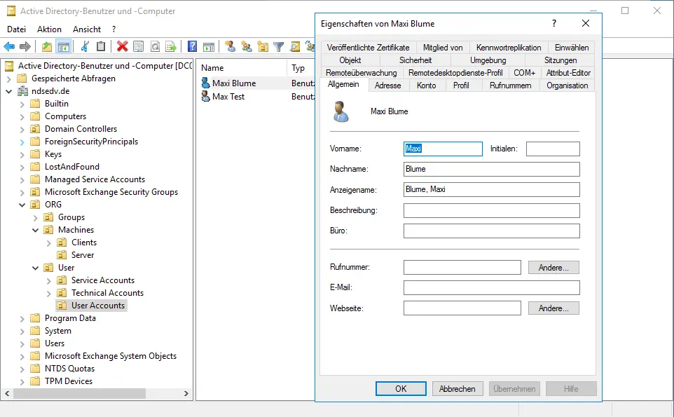
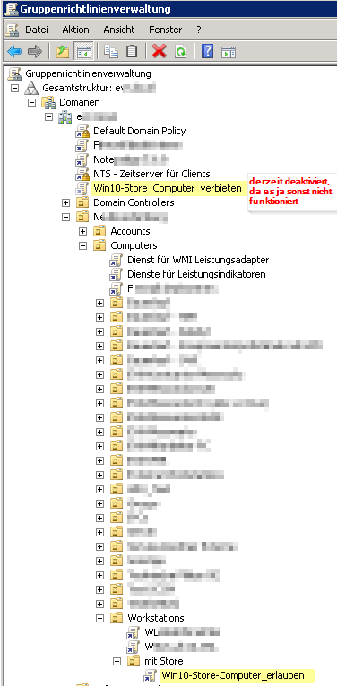

📁 Active Directory
i
Active Directory ist wie ein zentrales Adressbuch + Regelwerk für
ein ganzes Firmennetzwerk: es weiss, wer (Benutzer), was (Computer),
wo (Organisationseinheiten) ist, und welche Regeln (Gruppenrichtlinien)
wo gelten.
i
Grundlagen zu Objekten, Organisationseinheiten (OUs) und Gruppenrichtlinien-Vererbung – danach ein Vorhersage-Quiz und realistische Troubleshooting-Tickets.
📺 Vertiefung: Active Directory einfach und kurz erklärt (erklaerung-und-mehr)
Checkliste
AD-Objekte auf einen Blick
- Benutzer/Computer-Objekte: repräsentieren Personen bzw. Geräte in der Domäne, jeweils mit eigener eindeutiger SID.
- Organisationseinheiten (OUs): Container zur Strukturierung (z.B. nach Abteilung/Standort) - wichtigster Ankerpunkt für Gruppenrichtlinien und delegierte Verwaltung.
- Sicherheitsgruppen: fassen Objekte für Berechtigungen zusammen (z.B. Dateifreigaben, GPO-Filterung). Verteilergruppen hingegen sind nur für E-Mail-Verteilerlisten gedacht und tragen keine Berechtigungen.

Gruppenrichtlinien-Vererbung (LSDOU)
Gruppenrichtlinien (GPOs) werden in der Reihenfolge Local → Site → Domain → OU verarbeitet, wobei später verarbeitete Einstellungen früher verarbeitete überschreiben (die nächstgelegene OU "gewinnt" bei Konflikten). Zwei Sonderregeln durchbrechen das:
- Vererbung blockieren (Block Inheritance): eine OU kann die Vererbung von GPOs aus höher liegenden Ebenen unterbinden.
- Erzwungen (Enforced): ein GPO kann so gesetzt werden, dass es sich IMMER durchsetzt - auch gegen "Block Inheritance" weiter unten im Baum.
Wichtig: Vererbung wirkt nur top-down entlang der eigenen Astlinie - ein GPO an einer OU wirkt nie auf einen komplett anderen Zweig des Baums.

🔎 GPO-Vorhersage-Quiz
Alle Fragen unten beziehen sich auf diese eine OU/GPO-Struktur: